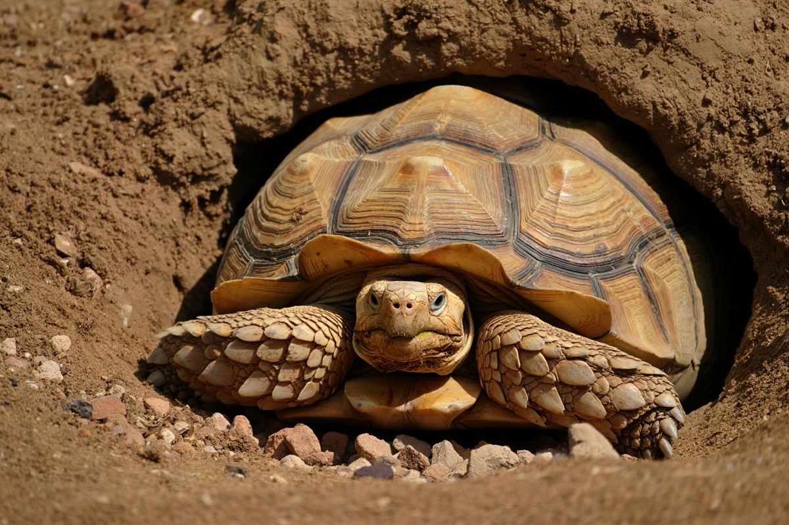
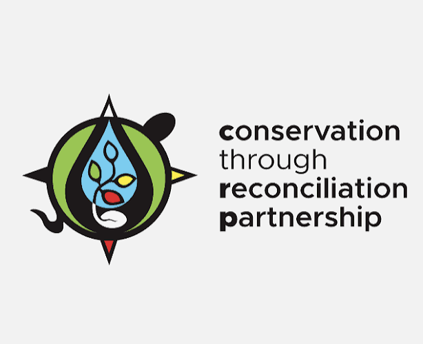
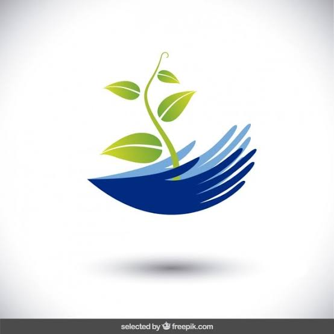
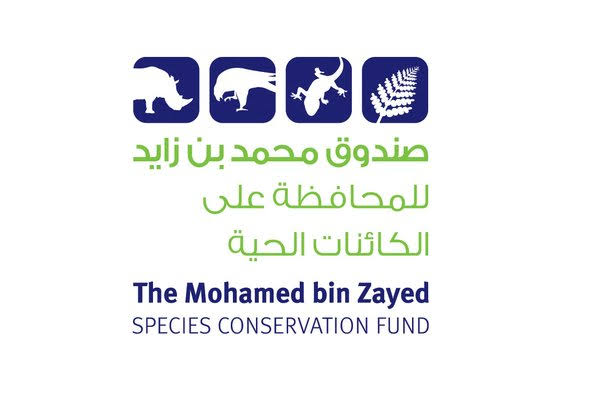
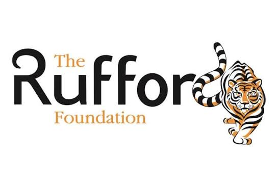
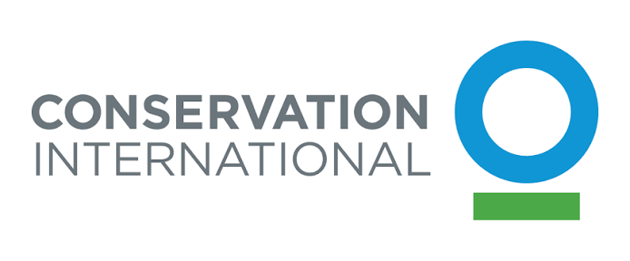
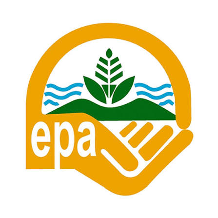

In the news


At Tortoise People Project, we believe that lasting conservation must be built from the ground up. Our strategy integrates scientific research, community empowerment, and habitat protection into a unified approach that addresses both the immediate threats facing Ghana's tortoises and the underlying causes of biodiversity loss. We work where the need is greatest — in the arid savannahs, forest edges, and community lands where endangered tortoise populations hang in the balance.
Every initiative we undertake is guided by evidence, shaped by local knowledge, and driven by the communities who share their landscape with these ancient creatures. From establishing community-managed protected areas to training local rangers and restoring degraded nesting habitats, our strategy is designed to create self-sustaining conservation systems that endure long after our direct involvement ends. This is how we turn short-term projects into generational change.

A clear path toward lasting tortoise conservation across Ghana — built on science, community, and sustainable action.
Identify and secure the most vulnerable tortoise habitats through community-managed protected areas, ensuring safe nesting grounds and foraging zones remain intact for generations.
Rehabilitate damaged landscapes through native tree planting, soil restoration, and invasive species removal to bring depleted tortoise habitats back to full ecological health.
Train and equip community members as conservation champions, transforming former poachers into wildlife rangers and creating sustainable livelihood alternatives.
Deploy trained rangers, establish monitoring systems, and collaborate with national authorities to dismantle illegal wildlife trafficking networks targeting tortoises.
Scale our impact by partnering with government agencies, traditional authorities, schools, and international organizations to embed tortoise conservation into national policy, education curricula, and cultural practice. Through advocacy, research, and public awareness campaigns, we are building a movement that ensures no tortoise species in Ghana faces extinction.
We collaborate with a broad network of local communities, government agencies, international conservation organisations, and research institutions to protect Ghana's amphibians, reptiles, and tortoises.









